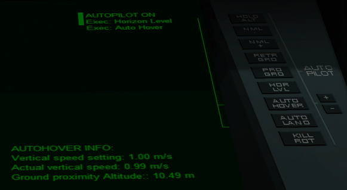

Arrow Freighter操作ガイド （オートパイロットとその他の機能）
オートパイロット
3Dコクピット中央のパネル右側のボタンをクリックすると、各種オートパイロットが利用できる。
AUTO HOVER（ホバーエンジンの自動制御）
AUTO HOVERボタンをクリックしてから+ / -ボタンをクリックすると、上昇・降下速度を設定できる。

AUTO LAND（自動着陸）
あらかじめビーコンを設置・投下しておくか、VOR/VTOL MFDで着陸パッドを選択しておくと、自動で軌道を離脱して着陸できる。
使用可能なビーコン
| Landing XPDR beacon | 着陸用XPDRビーコン |
| Auto unpack Probe | 自動探査機 |
これらをあらかじめ着陸予定地点に設置・投下しておく。
ただし、地球のような大気の濃い惑星では使えない。
MANEUVERS SECURITY（マニューバ警報）
離陸したりメインエンジンを点火したりする前に、中央パネル左側のMANEUVERS SECURITYのボタンをクリックしておくと、自動でエレベーターやドッキングベイなどを格納する。
その他の機能（右側パネル）
CHANGE SKINボタンをクリックすると、スキン（見た目）を変更できる。
GET FUEL / GET O2ボタンをクリックすると、近くの基地・ステーションから補給できる。※

※補給機能を持つ基地・ステーションでないと使えません。